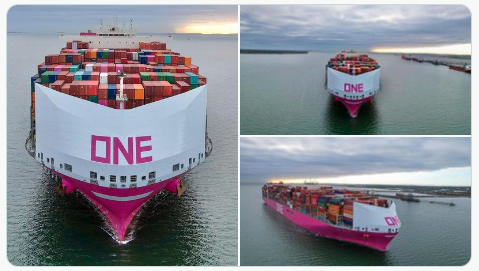
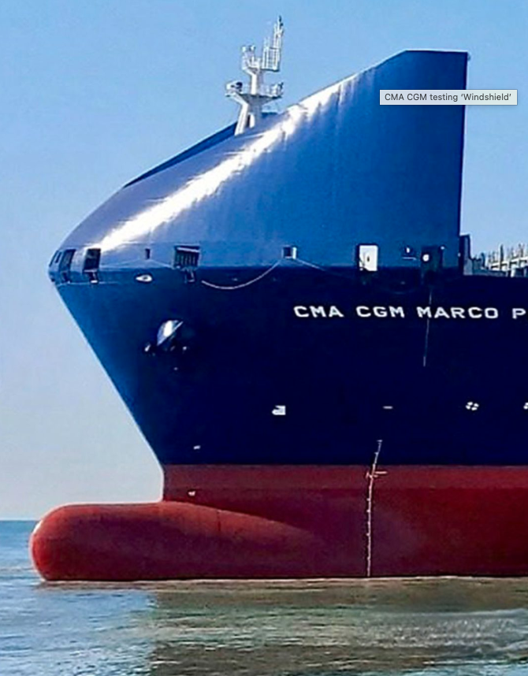
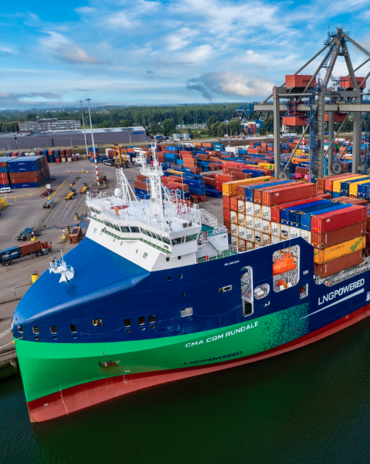
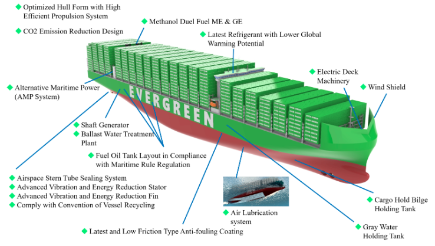

For the ship configuration studied at an apparent wind angle of about 20°, the bow Wind Shield alone reduced aerodynamic pressure drag. 1
CONTAINER-SHIP AERODYNAMICS · REAY'S NOTE
Container-Ship Wind Shields
How Can a Larger Shield Reduce Drag?
A large bow Wind Shield does not simply add another wall facing the wind. It creates a smooth aerodynamic leading edge for the container stacks. Drawing on the drag equation, wind tunnel testing, full-scale operational data, and shipyard technical reports, this article examines its actual benefits and practical limitations.

Key Wind Shield research findings
For MOL MARVEL operating at about 17 kn, the confirmed average CO₂ reduction relative to a sister ship without a Wind Shield was approximately 2%. 2 3
MOL and Samsung Heavy Industries estimated the CO₂ reduction from an optimized Bow Wind-Shield for an ultra-large container ship. 4
The Bow Wind Cover on JMU's 24,000 TEU design reduces aerodynamic pressure drag and permits containers to be stowed above the forward mooring deck. 5
The design logic of a Wind Shield is to replace the aerodynamically poor vertical wall formed by the first container row with a smoother, controllable curved surface. Even if the projected area increases slightly, the ship's total aerodynamic drag can still fall provided that the overall drag coefficient decreases by a greater proportion.
What Is a Wind Shield?
A bow Wind Shield may also be called a Bow Wind Shield, Bow Wind-Shield, or Windshield or Bow Wind Cover. Located ahead of the foremost deck containers, it acts as a large fairing that guides apparent wind smoothly upward and toward both sides of the ship.



Modern large container ships carry tall, wide deck-container stacks. When the first row faces the incoming flow, it forms an enormous, nearly vertical bluff body. Air striking the forward container faces creates a high-pressure stagnation region, flow separation, vortices, and a low-pressure wake, resulting in substantial pressure drag.
A Wind Shield transforms the abrupt forward container face into a curved or inclined leading edge. Instead of stopping abruptly ahead of the first container row, the air turns progressively, reducing flow separation and irregular pressure distributions.
A Wind Shield should therefore not be treated as an isolated component. It should be considered together with the deck-container stacks, superstructure, and the above-water hull as a single aerodynamic system.
Bluff Body
A body with a relatively square leading edge that readily causes flow separation; container stacks are typical bluff bodies.
Streamlining
Using smooth, continuous geometry to reduce abrupt pressure changes, flow separation, and wake size.
Apparent Wind
The wind experienced aboard the ship, resulting from the vector combination of ship speed and true wind.
Pressure Drag
Drag caused by an asymmetric pressure distribution between the front and rear of a body; a major component of bluff-body aerodynamic drag.
Airflow With and Without a Wind Shield
The figure below is a conceptual illustration, not a CFD result for a particular ship. The actual flow field is affected by stack height, missing containers, wind angle, ship speed, and superstructure arrangement.
How Does a Wind Shield Deliver Benefits?
Reduce direct wind impact on the first container row
The high-pressure stagnation region is transferred from irregular container end faces to the smoother, controllable curved surface of the Wind Shield.
Reduce flow separation and large vortices
Smoother flow over the container region helps reduce severe separation, unsteady wakes, and turbulence in gaps between containers.
Provide bow protection from green water
MOL's development information states that the structure is also expected to protect the foredeck from green water in severe sea conditions. 6
How Is Wind Shield Performance Verified?
Energy savings cannot be established from appearance alone. A professional design normally requires numerical analysis, model testing, structural and class review, and full-scale operational validation.
1
CFD analysis
Compare pressure distributions and flow fields for different curvatures, heights, widths, container arrangements, and wind angles.
2
Wind tunnel model testing
Measure axial wind force, lateral force, and yaw moment, while observing flow separation and vortices.
3
Structural and class review
Confirm that the structure can withstand wind loads, wave impact, vibration, fatigue, and deck-operation requirements.
4
Full-scale data validation
Compare performance after accounting for waves, hull fouling, displacement, currents, rudder angle, and other confounding factors.
Published Research and Shipyard Data
Available evidence includes wind tunnel models, full-scale monitoring, an AIP for an ultra-large container-ship design, and shipyard technical descriptions of actual newbuilds. The percentages use different baselines and must not be treated as the same type of energy-saving rate.
← Scroll horizontally to view the full table →
| Evidence type | Subject and method | Published result | Engineering interpretation |
|---|---|---|---|
| Wind tunnel model 2015 Japan Society of Naval Architects and Ocean Engineers | A roughly 1/250-scale model of a 6,700 TEU-class container ship was tested; the wind tunnel speed was 15 m/s, with apparent wind angles from 0° to 180° measured at 10° intervals. | At an apparent wind angle of about 20°, the bow Wind Shield alone reduced aerodynamic pressure drag by approximately 20%. Combined with aft-container arrangement and chamfered upper corners, the reduction reached about 30%; adding shields over side gaps increased it to about 50%. 1 | The 20%, 30%, and 50% figures refer to aerodynamic pressure drag, not whole-ship fuel consumption. For North Pacific service at 17 kn, the study estimated that the bow Wind Shield alone could yield approximately 2% annual fuel savings, while the complete package could exceed 5%. |
| Full-scale operation 2016 paper / 2017 MOL release | The 6,700 TEU MOL MARVEL was fitted with a horseshoe-shaped Wind Shield. Minute-by-minute Fleet Monitor data were used and compared with a sister ship without a Wind Shield. | The route-average energy-saving effect was estimated at about 2%, close to the 1.6% estimate derived from wind tunnel results and wind statistics. MOL also confirmed that, at about 17 kn, CO₂ emissions were reduced by approximately 2% on average. 2 3 | This remains the most representative full-scale operational evidence available. The analysis specifically accounted for waves, displacement, currents, rudder angle, hull condition, ship-to-ship differences, and other confounding factors. |
| AIP design 2019 MOL / Samsung Heavy Industries | An optimized Bow Wind-Shield was jointly developed for an ultra-large container carrier, and DNV GL issued an AIP (Approval in Principle). | According to the official release, an optimized ultra-large container-ship design was expected to reduce CO₂ emissions by approximately 2–4%. 4 | This is a design-stage estimate, not a guaranteed full-scale value for every route and sea condition. An AIP indicates acceptance of the concept and its basic design principles; it is not a guarantee of complete construction compliance or operational performance. |
| Shipyard technical report 2024 JMU 24,000 TEU | In its technical description of ONE INNOVATION, JMU states that the bow is fitted with a Bow Wind Cover. The series was jointly designed and built by Imabari Shipbuilding and JMU. | The shipyard explicitly states that the cover reduces aerodynamic pressure drag while allowing containers to be stowed above the forward mooring deck, improving stowage performance. 5 | This demonstrates that a new-generation large Wind Shield can provide more than energy savings; it can integrate aerodynamic drag reduction, mooring-deck protection, and container stowage into one design. The report does not publish a stand-alone energy-saving percentage for the cover. |
Note: The studies differ in ship type, container arrangement, wind distribution, route, speed, and analytical baseline. Their figures should be interpreted within the original test conditions and not applied directly to other ships.
Do not attribute the entire EEDI improvement to the Wind Shield
The same JMU technical report states that the 24,000 TEU ship's overall EEDI is more than 60% below the reference line. That improvement combines the underwater hull form, main engine, energy-saving devices around the propeller, optimized operating speed, and other design measures; it cannot be treated as the Wind Shield's contribution alone. 5
Why Do Studies Report Both 20% and 2%?
Because the two percentages use different denominators: 20% usually refers to the reduction in aerodynamic drag itself, whereas 2% usually refers to a reduction in whole-ship propulsion power demand, fuel consumption, or CO₂ emissions.
Simplified relationship
ΔRT / RT
≈
(Rair / RT)
×
(ΔRair / Rair)
Assume that aerodynamic drag accounts for 10% of total resistance under a particular operating condition and the Wind Shield reduces aerodynamic drag by 20%. Then:
10% × 20% = 2%
At the same ship speed, and provided other resistance components remain broadly unchanged, whole-ship power demand and fuel consumption may decrease by approximately 2%. This example only illustrates the proportional relationship; it is not a fixed resistance breakdown for all ships.
The stronger the wind, the easier the benefit is to measure
Aerodynamic drag is proportional to the square of apparent wind speed. The full-scale study also found that at higher apparent wind speeds, the Wind Shield's energy-saving effect is easier to distinguish from waves and other confounding influences. 2
What Practical Benefits Extend Beyond Energy Savings?
Bow protection in severe seas
The Wind Shield in MOL's development project was designed for wave-impact pressure and was expected to reduce the direct effects of green water on forward-deck machinery, forward containers, and associated equipment. 1 6
Improve container stowage
JMU's 24,000 TEU design integrates the Bow Wind Cover into the forward-deck arrangement, allowing containers to be stowed above the mooring deck and increasing usable stowage space. 5
Improve speed-keeping in strong headwinds
Wind tunnel research indicates that in strong bow-quartering winds, aerodynamic pressure drag can represent a significant fraction of a large container ship's calm-water resistance in still air. Reducing this component helps control fuel consumption and maintain schedule reliability. 1
Local wind pressure on forward containers may decrease, but securing calculations remain mandatory
From the flow-field mechanism, a Wind Shield shelters the foremost containers and changes local pressure distributions. Nevertheless, loads on containers, twistlocks, lashing rods, and corner posts must still be formally calculated for the actual loading condition, design wind loads, and latest class rules. Fitting a Wind Shield alone does not justify an arbitrary reduction in securing design loads.
A Larger Wind Shield Is Not Always Better
Wind Shield dimensions must balance aerodynamic benefit, structural weight, wave impact, maneuvering safety, visibility, cargo handling, and mooring operations.
Structural strength and wave impact
The bow is particularly sensitive to shipped water and impact pressure. The Wind Shield requires assessment of plate thickness, stiffeners, supporting structure, local buckling, fatigue, and green-water impact loads.
Weight and center of gravity
A large structure high on the ship increases lightship weight and affects the vertical center of gravity. The 2015 study compared a closed dome with an open horseshoe-shaped design and found little difference in aerodynamic drag, allowing the open structure to reduce weight. 1
Lateral wind force and yaw moment
The specific configuration in the wind tunnel study did not show large changes in lateral force or yaw moment. This does not mean every ship behaves the same way. New designs must still be tested over multiple wind angles, particularly for port approach, departure, and low-speed maneuvering. 1
Sensitivity to container arrangement
Wind Shields are normally optimized for a representative container stack height and arrangement. When an actual voyage has missing boxes, lower forward stacks, port-starboard asymmetry, or special containers, the aerodynamic benefit may differ from the design condition.
Bridge visibility and equipment arrangement
The design must preserve bridge sightlines, navigation-light sectors, and radar/sensor fields of view, while avoiding interference with windlasses, mooring winches, fairleads, access routes, and emergency working space.
Life-cycle maintenance
Corrosion protection, drainage, inspection access, weld fatigue, wind-induced vibration, noise, and coating maintenance must be considered. Fuel savings should be assessed against construction and maintenance costs.
Common Misunderstandings and Correct Interpretation
“A larger frontal area always increases drag”
Incomplete. Drag depends on both projected area and drag coefficient. If streamlining reduces the drag coefficient by more than the projected area increases, total aerodynamic drag can still decrease.
“A 20% drag reduction means 20% fuel savings”
Incorrect. The 20% figure normally applies only to aerodynamic drag. The main engine must still overcome underwater frictional resistance, wave-making resistance, appendage resistance, and added resistance in waves.
“An AIP guarantees full-scale energy savings”
Incorrect. An AIP is an Approval in Principle, indicating that a concept design is feasible within a defined review scope. It does not replace complete class review or full-scale performance validation.
Key Terms
- AWA | Apparent Wind Angle
- Apparent wind angle, usually referenced to the ship's heading, indicating the direction from which the wind is experienced aboard.
- AWS | Apparent Wind Speed
- Apparent wind speed, formed by the vector combination of true wind and ship speed, and a key input to aerodynamic-load calculations.
- CFD | Computational Fluid Dynamics
- Computational fluid dynamics: numerical analysis of velocity, pressure, separation, and vortices around a ship.
- CX / CFX
- A nondimensional wind-force or aerodynamic-drag coefficient in the ship's longitudinal direction; symbols and sign conventions may differ among studies.
- AIP | Approval in Principle
- Approval in Principle: a preliminary technical review by a classification society of a new concept or basic design; it is not equivalent to full class approval.
- Green Water
- A substantial mass of seawater shipped over the bow or bulwark onto an exposed deck, potentially imposing impact loads on equipment, structures, and cargo.
- EEDI | Energy Efficiency Design Index
- The Energy Efficiency Design Index, used to quantify design CO₂ emissions per unit of transport work under specified reference conditions.
- ULCV | Ultra-Large Container Vessel
- Ultra-large container vessel. There is no single globally uniform TEU threshold in practice; the term generally refers to the largest modern ocean-going container ships.
Engineering conclusion
A Wind Shield is not an added “wind wall”; it is the aerodynamic leading edge of a container ship's above-water form.
The most reasonable synthesis of the published evidence is as follows: at certain wind angles, a bow Wind Shield can reduce aerodynamic pressure drag by approximately 20%. At whole-ship level, a 6,700 TEU ship has demonstrated an average reduction in CO₂ emissions of approximately 2% at about 17 kn. For optimized ultra-large container-ship designs, official estimates are approximately 2–4%, but verification remains dependent on route wind conditions, container arrangement, and actual operating conditions.
≈20%
Reduction in aerodynamic pressure drag under specific wind tunnel conditions
≈2%
Average full-scale reduction in CO₂ emissions measured on MOL MARVEL
2–4%
Official estimate for an optimized ultra-large container-ship design
Research Papers and Official Sources
The sources below prioritize academic papers, official shipping-company releases, and shipyard technical reports, allowing the original conditions and research methods to be checked.
-
Development of Energy-saving Windshield for Large Container Ship
/ 大型コンテナ船の省エネ船首風防の開発
Conference Proceedings of the Japan Society of Naval Architects and Ocean Engineers, No. 21, 2015, pp. 159–162. Covers the wind tunnel model, comparisons across wind angles, drag-reduction rates, and estimated energy savings on a North Pacific route.
Open J-STAGE / DOI -
Big Data Analysis Methods for Proving Energy-Saving Effects
of Windshield on a Container Ship
/ コンテナ船船首風防の実海域省エネ効果解析
Conference Proceedings of the Japan Society of Naval Architects and Ocean Engineers, No. 23, 2016, pp. 433–436. Uses minute-by-minute operational data from MOL MARVEL and a sister ship to analyze the bow Wind Shield's performance in actual service.
Open J-STAGE / DOI -
MOL Confirms 2% in Average CO₂ Reduction
with Windshield Installed on Bow of Containership
Mitsui O.S.K. Lines official press release, May 30, 2017. Reports an average reduction in CO₂ emissions of approximately 2% at about 17 kn in full-scale operation.
Open the official MOL release -
MOL Earns AIP for Design of Bow Wind-Shield,
Ultra-large Containership
Jointly developed by MOL and Samsung Heavy Industries; received DNV GL AIP in 2019. The official estimate for an ultra-large container ship is an approximately 2–4% reduction in CO₂ emissions.
Open the official MOL release -
JMU Technical Review No. 15:
24,000 TEU Container Ship — ONE INNOVATION
Japan Marine United, February 2024. Explains that the Bow Wind Cover reduces aerodynamic pressure drag and allows containers to be stowed above the forward mooring deck.
Open the JMU technical report (PDF) -
New Energy-saving Windshield Installed on
Containership MOL MARVEL for Demonstration Test
MOL official press release, September 3, 2015. Describes the horseshoe-shaped design, research partners, structural-strength requirements, estimated annual energy savings, and the intended protection against green water.
Open the official MOL release